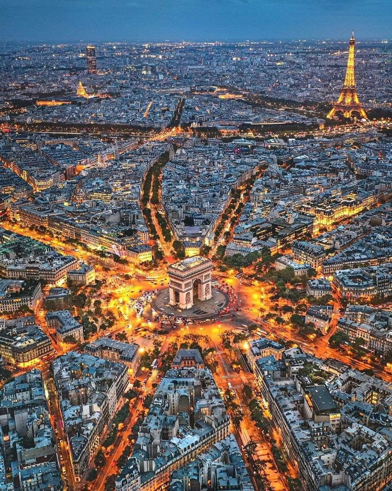

The star of streets at blue hour—gold on stone, headlights drawing lines toward the horizon, and the arch holding the center like a compass rose made of light.
A reminder of how grand the city’s geometry feels from above before we’re back at street level dodging scooters.